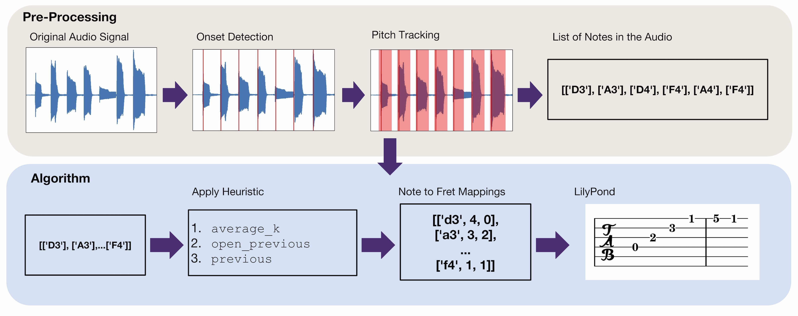
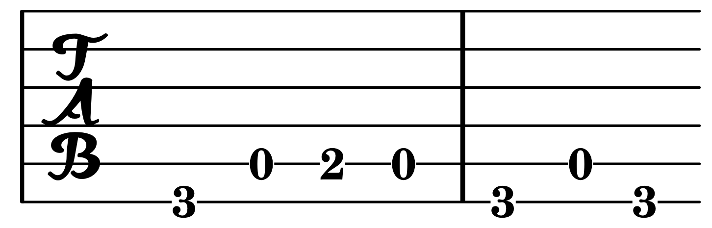

tablatar
tablatar turns your monophonic guitar music into easy-to-play tablature.
Guitar tablature allows musicians who cannot read sheet music to learn how to play new songs. Tablature mimics the guitar's fretboard, providing exact fret and string information to the player.
Users who want to learn a new song have two primary options:
Manual transcription: often time-consuming, with high risk of human error. Requires prior music knowledge, or prior work done by someone else on sites like UltimateGuitar.
Automatic transcription: sites like Chordify can automatically extract chords from a song, but this is limited to the backbone of the song rather than the melody.
We extract notes from a recording, then apply one of three heuristics to choose which possible fretting of a note is most-playable in the context of the song.


We extract “chunks” of notes, divided based on a configurable onset difference. We iterate through all notes in each chunk. For each note, the fretting option is chosen that is closest to a “target fret,” chosen based on a heuristic measure. Our current best heuristic is average_k, which chooses a target fret closest to the average k previous frets, while preferring open-string options. The open_previous heuristic chooses a target fret closest to the immediately previous note (essentially average_k with k=1), while again preferring open-string options. This heuristic is applied at notes index less than (k-1) for average_k—that is, notes where average_k is impossible. Finally, the previous heuristic chooses a target fret based solely on the previous note’s fret.
When considering the first note of a chunk’s mapping, we consider all possibilities (as all future notes will rely on that choice), and generate mappings for that chunk for each option. We finally choose the chunk mapping by selecting the mapping with the minimum distance traveled by fret. Finally, all chunk mappings are combined and processed into text that can be typeset by LilyPond.
Program output:
%['G2', 'A2', 'B2', 'A2', 'G2', 'A2', 'G2']
\new TabStaff { g,\6 a,\5 b,\5 a,\5 g,\6 a,\5 g,\6 }
After typesetting in LilyPond:

We tested on a self-recorded dataset of 50 moderate-speed and monophonic melodies, played line-in on an electric guitar. The accuracy of the notes detected from the original recordings is displayed in the histogram to the right.
Our method was also tested qualitatively. We gave the tablature produced from the dataset by tablatar to beginning guitarists. We found that all results were technically playable, although there was a varying degree of difficulty—primarily stemming from the original recording, not our output.
Our results indicate that onset accuracy is one of the most important factors in generating notes. While pitch tracking generally worked as expected, as is visible in the above histogram there were cases of missed onsets. Additionally, we learned that there is no good "ground truth" when comparing tablature, as a sequence of notes can be played in multiple ways. This meant that we needed to subjective measures to evaluate our method.
In general, we found that our open_previous method worked best on this data set, as there frequently were not enough notes to generate a useful average. In longer recordings, however, average_k will do a better job of producing playable tablature.
Limitations
As mentioned, accurate onset detection is difficult when relying on pre-existing libraries. This limited our ability to correctly identify all notes played in our data set. We also found that the correctness of the result varies with the quality and speed of recordings. If the track analyzed is distorted or transitions between notes too quickly, the onset detection and pitch tracking suffers.
Future Work
One path towards improving the accuracy of onset detection and pitch tracking would be through a machine learning approach. This would be a great next step forward. In order to improve the overall playability of our generated tablature, a more sophisticated fret-mapping algorithm could be created that attempted to maximize the existence of common chord shapes in the output tablature. This would work towards matching the way human players choose the best way to perform a song. Finally, support for multiphonic and more complex melodies would greatly increase the value of our platform, but obviously is a serious challenge as it is a subject of ongoing academic research.